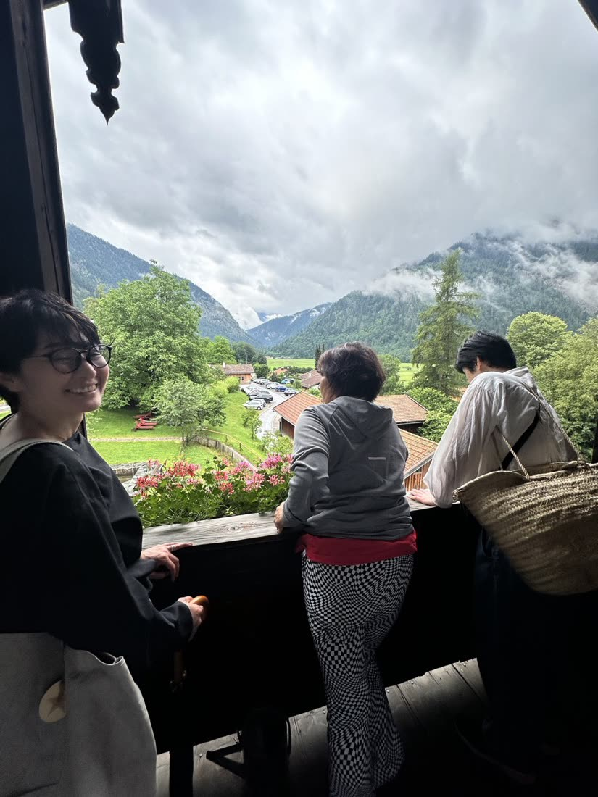
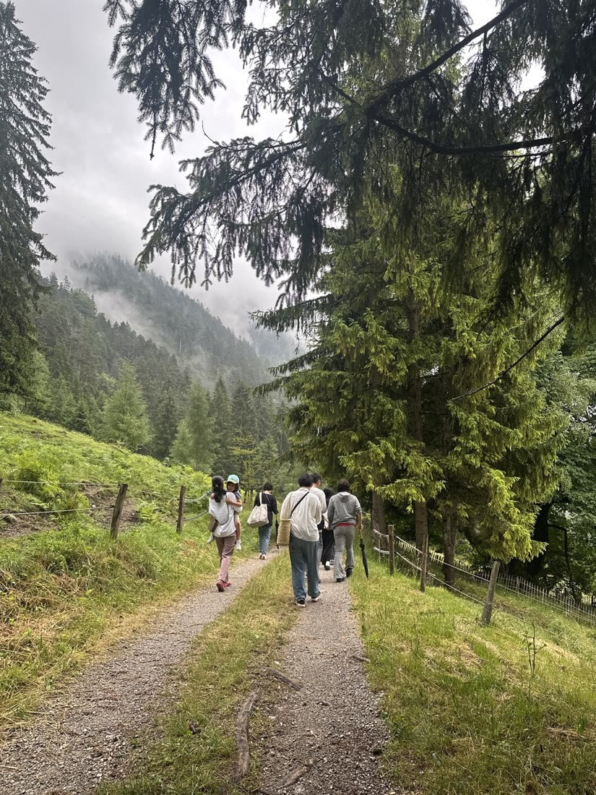
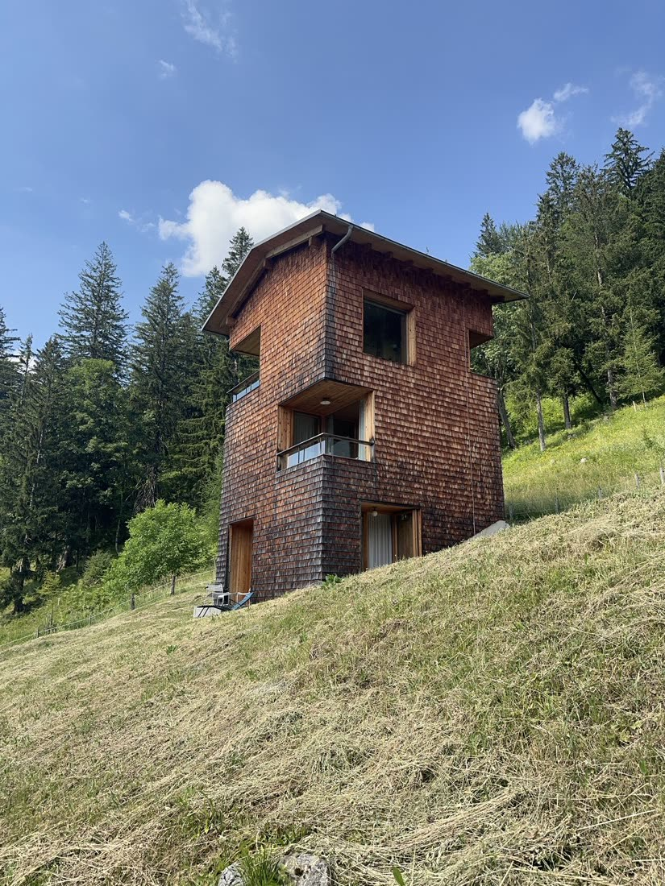
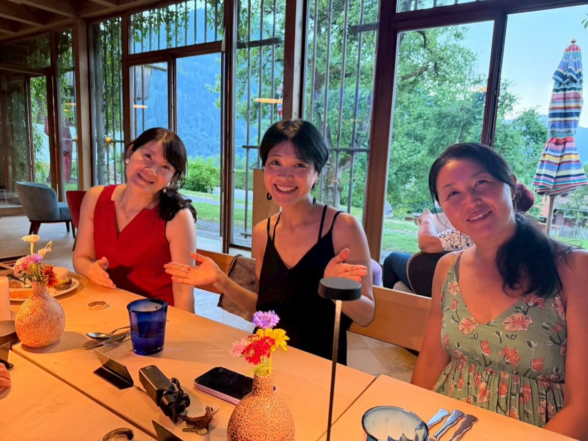
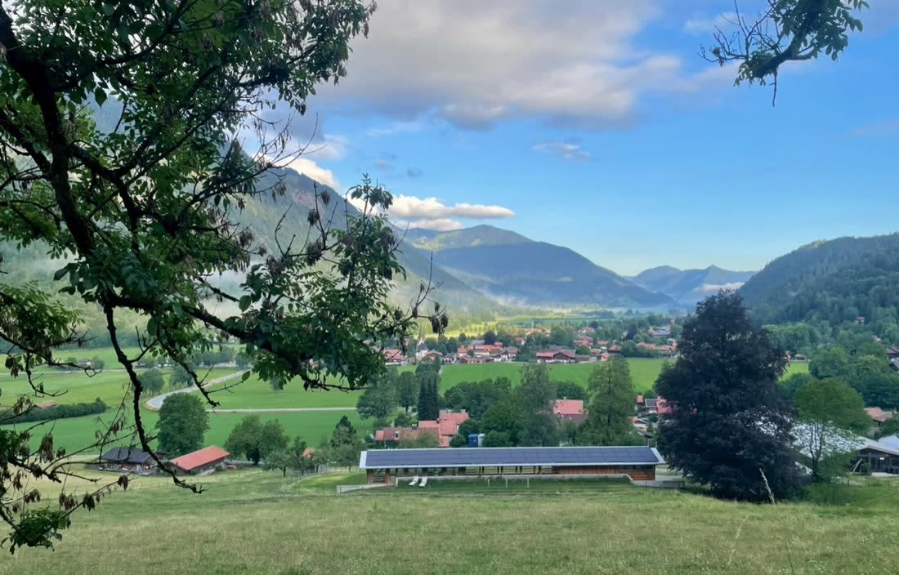
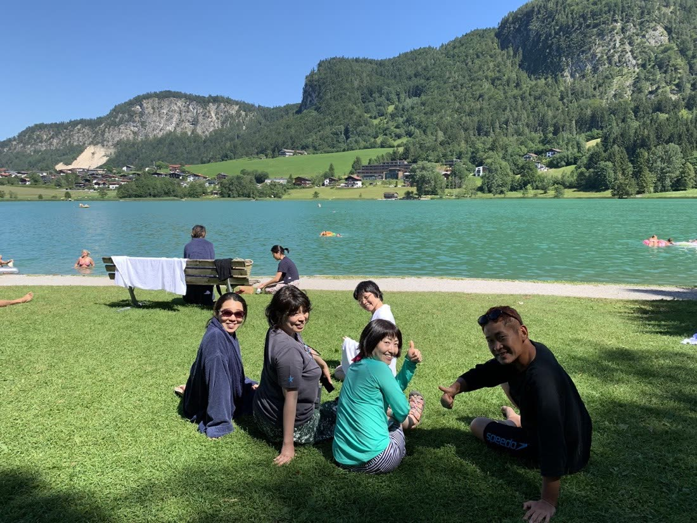
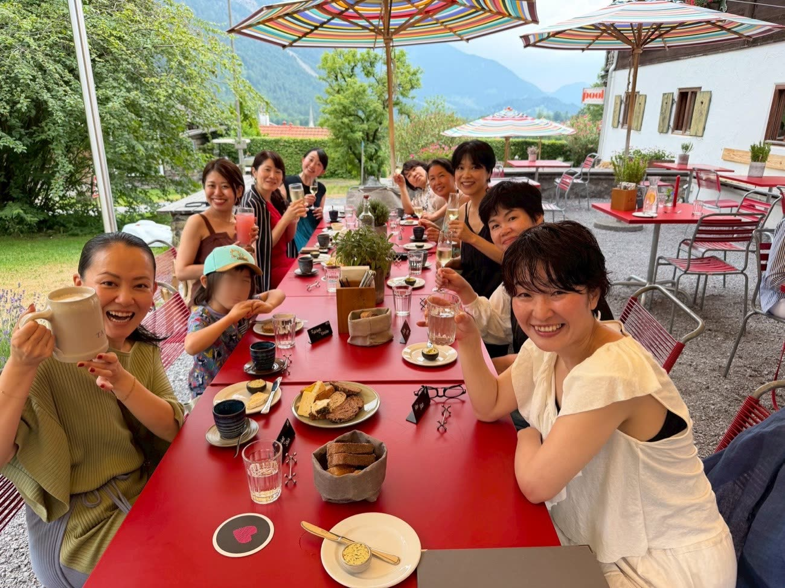
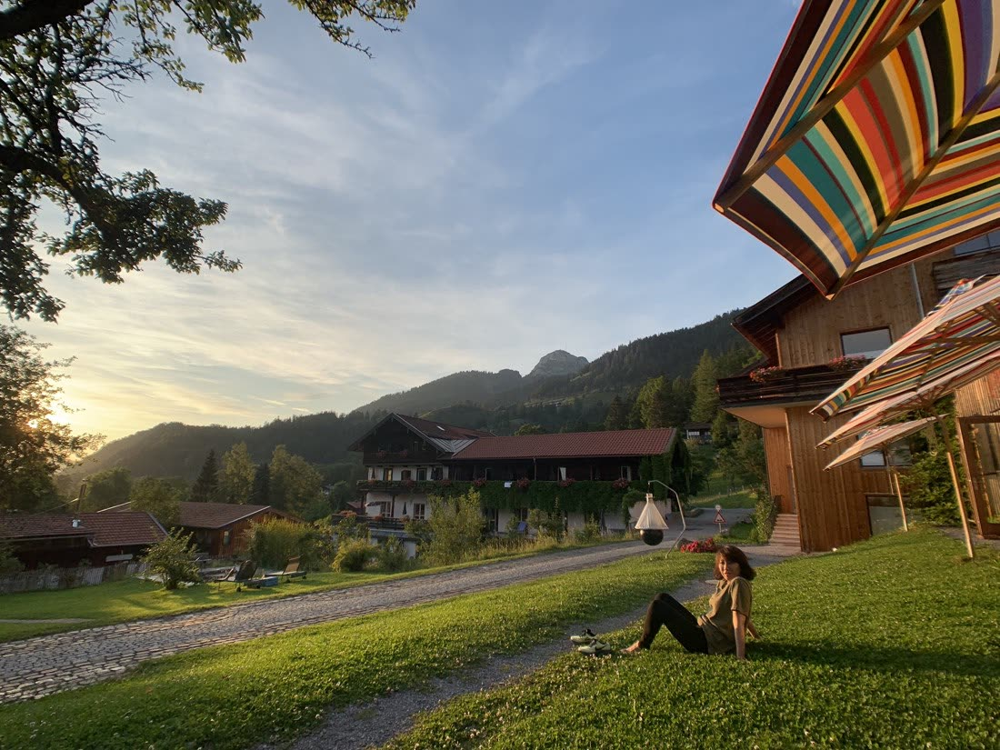
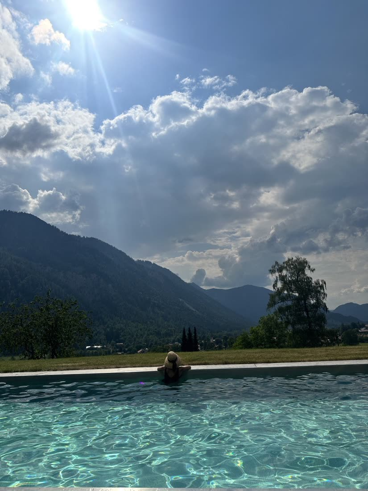
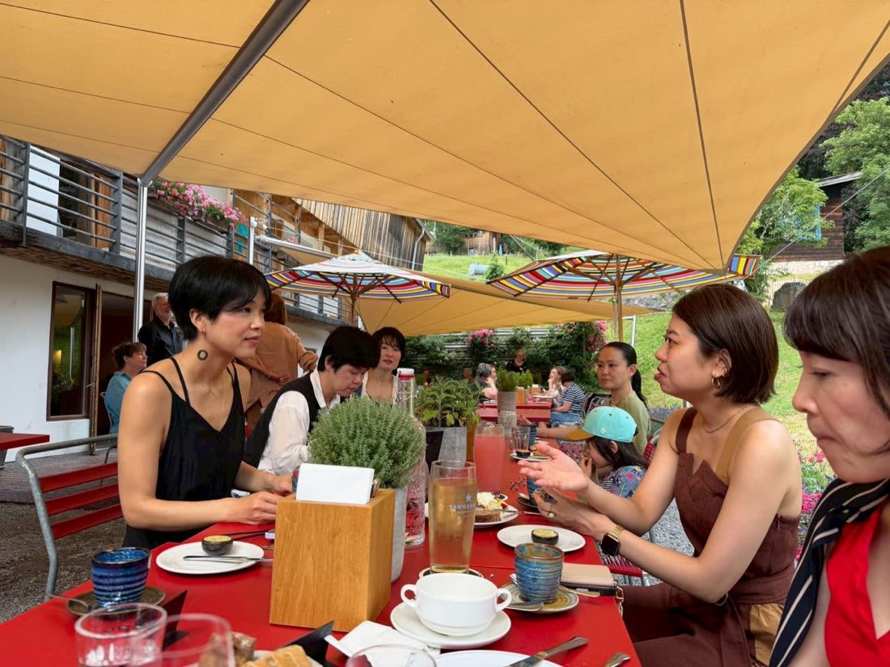

2026年のタナホフ →

Tannerhof · Bayrischzell · Bayern
28.06 – 03.07.2027オーガニック未来会議 2027
南ドイツ・バイエルン
ヨーロッパアルプスの麓
ビオホテル「タナホフ」
5泊6日・招待制
ご招待
このページは、私からお声がけした、あなたに向けて書いています。
私は、「オーガニックが、あたりまえ。」な社会を、本気でつくりたいと思っています。
でも、その社会は、誰か一人の力でつくれるものではありません。
一人ひとりが、自分の本当にやりたいことを仕事にしたり、日々の暮らしの中で大切にしたいものを選んだり。
そんな人たちがつながって、応援し合って、それぞれの場所で新しいことを始めていく。その積み重ねが、社会を変えていくのだと思います。
だから私は、同じ思いを持つ人たちと、来年の夢を本気で語り合う場所をつくりたくなりました。
その場所が、ドイツ南部のビオホテル「タナホフ」です。私が6回訪れてきた、大切な場所。
自然の中にいると、自分が何者で、何をしたかったのかを、ふと思い出すことがあります。
あの場所で、あなたはこれから何をしたいと感じるでしょうか。そして、日本に帰ってから、どんな一年を始めたいでしょうか。
オーガニック未来会議2027は、その未来を仲間と一緒に考えるための、招待制の会です。




2026年のタナホフ →
旅のあとの一年
毎日の仕事や、家族のこと。
やるべきことを一つずつこなしているうちに、一日が終わってしまう。
本当は始めたい仕事がある。いつか形にしたい活動がある。もっと大切にしたい人や時間がある。
でも、目の前のことが優先になって、なかなかゆっくり考える機会がない。そんなことはありませんか。
もし、今の仕事や役割から少し離れて、自分が本当にやりたいことを考えられる時間があったら。そして、それを安心して話せる仲間がいたら。
これからの一年に、どんな選択ができるでしょうか。
私が大切にしたいのは、旅の中だけで完結する幸せではありません。旅が終わってからも、あなたの中に残っていくものです。
自分は何を大切にしたいのか。誰と、どんな未来をつくりたいのか。そして、そのために自分は何を始めたいのか。
その答えを自分の言葉で見つけていく時間を、仲間と持ちたいと思っています。
未来会議の流れ
オーガニック未来会議は、タナホフで過ごす5泊6日だけの会ではありません。
それぞれの来年の夢を話しながら、仲間と作戦会議をしていきます。仕事のことでも、暮らしのことでも、これから挑戦してみたいことでも。まだ形になっていなくても大丈夫です。
美しい自然の中で時間を過ごし、みんなの前で夢の発表会をします。最終日には、次の一年をどう生きていきたいか、一人ひとりが宣言します。
人に話してみることで、自分が本当に望んでいることに気づくことがあります。自分だけでは思いつかなかった考えに、仲間の言葉から出会うこともあります。
宣言は、誰かが決めた正解に合わせるためではありません。自分で選んだ未来を、自分の言葉で確かめるためです。
その宣言が、帰国後に新しいことを始めたり、迷ったときに自分の願いを思い出したりするきっかけになればと思っています。
夢を語って、応援し合って、それぞれが自分の場所に戻っていく。そして、またあの森で落ち合える。
私は、そんな関係を育てていきたいのです。

2026年の参加者の声
2026年の夏、仲間と一緒にタナホフを訪れました。最終日に、一人ずつ聞いたことがあります。
「この旅で、得たものは何ですか。
手放したものは何ですか」みんなの答えは、それぞれ違いました。
でも、どの人の言葉にも、
その人自身が過ごした時間がありました。
話してくれた言葉のまま載せています。
お名前は伏せています。
家のことに追われる、
仕事に追われるっていうことが
すごい多かったので、
そこから一旦
自分を切り離すことができて、
ここで感じるいろいろなことに対して、
自分と向き合うことができて、
私、こういうことに引っかかるんだ、
こういうことが嫌なんだなっていうのを、
なんで嫌なんだろうなっていうことまで、
ちょっと考える時間が持てたのが
とても良かったかなって思ってます。
― 2026年の参加者
普段は仕事の自分みたいな感じで
人と関わるんじゃなくて、
本当に素の自分で
いろんなお話ができたのは、
ここの空気感のおかげだったりとか。
いい意味で、自分が会社やってるとか
関係ない。
私自身がどう過ごしたいかとか、
どういたいかとか、
そういうのをすごく尊重される場だったので、
むちゃくちゃ居心地が良かったです。
― 2026年の参加者
私はまず手放したものは、
ねばねば星人。
ねばならない。
ねばねば星人を手放しました。
得たものっていうのは、
案外、自分の人生も残り少ないなっていうことに
気づかせてもらって、
ねばねば星人から、
自分が選択したもので
いきたいなっていうことを思いました。
― 2026年の参加者
だからこれからも本当に、
私は自然を守っていきたい、
地球を守っていきたいというところ、
絶対にこの人生においては
テーマだと確信しているので、
それを皆さんと一緒に
叶えていきたいし、
こういう仲間がどんどんどんどん増えて、
つながっていくことを
期待しています。
― 2026年の参加者
ほかにも、こんな言葉がありました。
「楽しみながら気持ちを整えて、また明日から頑張ろうという気持ちにとてもなれるツアーでした」
「まず大切な仲間に出会えたっていう風に思っております」
「私にとって今後、何をするにも基盤となるとか基礎となる、そういうところが得られたんじゃないかなと」
旅から帰ったあとに
旅から帰った後にも、うれしい話がありました。
2026年に一緒に訪れた方の中に、以前からやりたかった地域の人たちへの教育活動と、ご自身が取り組んできたオーガニックのお店の事業を掛け合わせて、新しい取り組みの準備を始めた方がいます。
まだ準備の段階ですし、旅がその直接の理由だったと断言できるものではありません。
でも、一緒に旅をした仲間が、帰国後に新しい一歩を踏み出そうとしていることを、私はとてもうれしく思っています。
旅の中で感じたことが、その人の日常とつながっていく。私は、そんな時間を、これからも仲間と重ねていきたいです。
2026年の仲間たち


上の声を話した方を示す写真ではありません。
私からのメッセージ
ここからは、私自身のお話をさせてください。
私は、2017年から2021年までに、タナホフを5回訪れています。
当時の私の事業は、主に一般の消費者の方に向けたコース販売でした。事業としては、ほぼ一本だったんですね。
でも、その頃は、本当にいろいろなことがうまく進んでいました。売上も右肩上がりに伸びて、仲間もめちゃくちゃ増えました。SNSも大きく伸びていました。新しく挑戦することにも、次々に結果が出ていました。
その後、事業が傾いた時期がありました。タナホフにも、2022年から2026年の夏まで、ずっと来ていませんでした。その間、売上も、SNSのフォロワー数も減っていきました。
そして2026年の夏。6回目のタナホフに、今度は仲間とのツアーという形で戻ってきたんです。
すると、その後から、またいろいろなことが動き出したように感じています。
以前からやってみたかった、ドイツの人たちに向けた事業。民泊事業や、ドイツのメーカー、ホテルのPRなど、今までの教育事業とは違う仕事にも取り組んでいます。
ユーロで収入を得るなんて、以前は夢のように感じていたんですね。それが今、まだ始めたばかりのものもありますが、自分でも拍子抜けするくらい、うまく進んでいるんです。
日本の企業向けの研修やPR、イベントの企画運営などにも、新しく挑戦しています。私にとって経験が豊富とはいえない分野もあるのですが、こちらから提案したことを受け入れてくださる企業さんが何社も現れています。本当に、ありがたいことです。

それで、ふと不思議に思って、過去の数字を見直してみました。
すると、私がタナホフを訪れていた2017年から2021年は、売上もフォロワー数も伸びていた。しばらく行かなくなった時期には、減っていた。そして2026年の夏、もう一度ここに戻ったあとに、新しい仕事が次々と動き出している。
正直、今までそんなふうに考えたことがなかったので、自分でも驚きました。
もちろん、事業の数字が変わる理由は、ひとつではありません。タナホフに来たから売上が伸びた、と証明できるわけでもありません。
それでも私自身は、この場所が、今までの私の人生や事業のあり方に、何か大切なものを与えてくれたのではないかと感じています。
最近の私は、目に見えないものを、以前にも増して大切にするようになりました。
人は、自然の一部なんですよね。私たちは自分の力だけで生きているわけではなくて、自然の、言葉では形容できないような力も借りながら、生かされているんだと思うんです。
世界には、そういう特別な力を感じる場所が、いくつかあるんじゃないでしょうか。私にとって、ドイツでは、タナホフがその一つです。
ホテルの森の中には、私が特別なエネルギーを感じる場所があります。
一緒に来た人の中にも、「ここには結界があるように感じる」とか、「昔から知っていたような場所」「自分に戻れる場所」と話してくれる人がいました。そういう言葉を聞くと、やっぱり私が感じていたことは、私だけのものではなかったんだなと、うれしくなるんです。
もちろん、こういう感覚は、人によって違うと思います。同じように感じなければいけない、ということではありません。
でも私は、この場所で感じるものを、これからも大事にしたい。そして、ここを原点にして、仲間とまた落ち合いたいんです。
自分が叶えたい夢を語る。仲間の夢を応援する。それぞれが自分の仕事や暮らしに戻って、できることから始めていく。
そしてまた集まったときに、「こんなことを始めたよ」「ここまで進んだよ」と話せる。
そんな仲間が増えて、つながっていったら、私たちは本当に社会を動かしていけるんじゃないか。私は本気でそう信じています。
私が目指しているのは、「オーガニックが、あたりまえ。」な社会です。
オーガニックが、特別な人だけのものではなく、毎日の暮らしや仕事の中で自然に選ばれること。自然を大切にすることと、自分らしく働くこと、周りの人を幸せにすることが、当たり前につながっていること。
それを、同じ思いを持つ人たちと一緒に、少しずつ広げていきたいんです。
だから、この会は公開募集にはしていません。私が、これからの未来を一緒につくっていきたいと思う方に、お声がけしています。あなたをお誘いしたのも、そのためです。
信じれば、そこにある。信じなければ、そこにはない。目に見えないものって、そういうものだと思うんです。そんなことはないと思っていた私にも、起きました。そして、確信したとき、現実は本当に動きます。
私はこれからも、確信を持ってタナホフに戻ってきたいと思っています。ここで発表したことを、絶対に実現していくんだ。そんな覚悟と意志を、自分自身も大切にしていきたいんです。
そして、あなたにも、ここで自分の夢と向き合ってほしい。
私と同じように、この場所の力を感じる必要はありません。でも、自分の中にある願いや直感を大切にして、これからの一年を、自分の意志で動かしてみたい。そんな思いを持って来ていただけたら、私は本当にうれしいです。
あなたと、あの森でまたお会いできることを、心から楽しみにしています。
レムケなつこ
タナホフという場所
タナホフは、ドイツ南部・バイエルンのアルプスの麓にあるビオホテルです。
約100年前、一人の医師がつくった療養所から、その歴史が始まりました。自然の中で、食べること、体を動かすこと、休むことを大切にする。その考え方は、今のホテルにも受け継がれています。
体だけでなく、心も、目には見えない内側の部分も大切にする。ここには、そんな考え方があります。

ホテルでは、オーガニックの食事や、環境に配慮した日用品が使われています。でも、私がこの場所に惹かれる理由は、それだけではありません。
人と人との交流が自然に生まれるように考えられた空間。何もしないで、ただ自然の中にいることもできる時間。自分の心や体が何を求めているのか、ゆっくり感じられる環境。
ここに来ると、普段は目に見える成果や数字に気を取られていた自分が、それ以外の大切なものにも気づける気がします。
「魂が戻る場所」
「はじめて来たのに、
どこかで来たことがあると
感じる場所」
「ここだけ温かい結界があると
体感できる場所」
2026年に一緒に訪れた仲間の言葉
タナホフは、私にとって「私に戻る場所」です。
あなたにとっては、どんな場所になるでしょうか。それを、ぜひ自分自身で感じてほしいと思っています。
タナホフで過ごす5泊6日
2026年の滞在では、朝、放牧された牛たちのカウベルの音で目を覚ましました。
バルコニーに出ると、目の前にはアルプスの山々。自然の中で一日を始める、その時間がとても好きでした。

食事は、地元のものやオーガニックの食材を中心にした料理です。仲間と同じテーブルを囲み、ゆっくり話をする。


山を見渡せる屋外プールで泳いだり、サウナに入ったり。

ホテルには、ヨガやピラティス、ハイキングなどの日替わりのアクティビティもあります。参加することも、何もしない時間を選ぶこともできます。
2026年は、仲間と山を歩き、野草を学び、食事を囲みながら、たくさんの話をしました。

でも、今回の旅で私がいちばん大切にしたいのは、どれだけ多くのことを体験するかではありません。
日常から少し離れたときに、自分の中からどんな思いが出てくるのか。仲間との会話の中で、どんな夢を話したくなるのか。そして、その思いを日本に持ち帰って、どう生きていきたいのか。
それを感じるために、この5泊6日を使ってほしいと思います。
2026年の旅の様子は、Instagramでも見られます。
2026年の旅のリールを見る日程・参加費・キャンセルのこと
オーガニック未来会議2027は、日本在住の方を対象とした、招待制・少人数の会です。最少催行人数は設けていません。人数が少ないことを理由に中止することはありません。
お席確保代€500のうち、€350は企画・運営準備費用とホテルの事前手配費用に充てるため、旅行開始日の60日前までにキャンセルされた場合でも返金されません。60日前までのキャンセルで返金されるのは、最大€150です。59日前以降は、下のキャンセル料がかかります。海外旅行保険と、必要に応じてキャンセル保険への加入をおすすめします。
本ツアーは、海外施設（ドイツ・ホテルなど）との連携により実施されます。そのため、時差や現地ホテル側のキャンセル規定をふまえ、以下のポリシーを適用いたします。
お申し込み時に、お席確保代（デポジット）として€500をお支払いいただきます。お席確保代は、以下の費用に充当されます。
お席確保代€500のうち、返金の対象となるのは最大€150のみとなります。
お申し込み確定後にキャンセルされる場合、以下のキャンセル料が適用されます。
| キャンセル日（旅行開始日からの起算） | キャンセル料 |
|---|---|
| 60日前まで | €150を返金（お席確保代のうち€350は返金不可） |
| 59〜45日前 | 参加費の30％ |
| 44〜31日前 | 参加費の50％ |
| 30〜15日前 | 参加費の80％ |
| 14日前以降 | 参加費の100％ |
| 当日・無連絡 | 参加費の100％ |
※参加費には、お席確保代€500を含みます。
お客様都合による途中参加、途中離脱・早期帰国などによる未使用分の返金はございません。※現地ホテル・サービス提供者も返金不可のため。
レムケの急病、不可抗力などにより実施が困難となり、IOBが催行を中止した場合は、お支払いいただいた参加費を全額返金いたします。※ただし、お客様が個人で手配された航空券・交通費・宿泊費などは補償対象外となります。
理由の如何にかかわらず、上記キャンセル料が適用されます。※海外旅行キャンセル保険の加入を推奨いたします。
ホテルや現地施設のキャンセル規定は、IOBが契約当事者となります。そのため、IOBが費用を立て替えることのないよう、本ポリシーを設定しています。ご自身で手配される航空券・交通手段・保険については、お客様のご負担となります。
最後に
一年後、あなたはどんな仕事をしていたいでしょうか。どんな人たちと、どんな時間を過ごしていたいでしょうか。
ずっとやってみたかったことを、何か一つでも始められていたら。自分が本当に大切にしたいものを、今よりも大切にできていたら。そして、その一年を振り返ったときに、あの森で仲間と語った時間を思い出せたら。私は、とてもうれしいです。
タナホフで過ごす時間だけではなく、その先に続く、あなたの仕事と暮らし。その未来を、あなたと一緒に考えたいと思っています。
そして、またあの場所で落ち合える仲間になれたら。
2027年の夏、タナホフでお会いできることを、心から楽しみにしています。
お申し込み内容を受け付けました。
振込先をご案内するメールを、ご入力いただいたアドレスへお送りしました。お振込みについては、メールに記載された内容をご確認ください。
メールが届かない場合は、迷惑メールのフォルダもご確認ください。
恐れ入ります。
あと一手間だけお願いします。
ただいま自動の送信が使えない状態です。下のボタンを押すと、入力した内容が入ったメールが開きます。そのまま送信していただければ、お申し込みを受け付けます。
メールでお申し込みを送るお問い合わせ：school@iob.bio